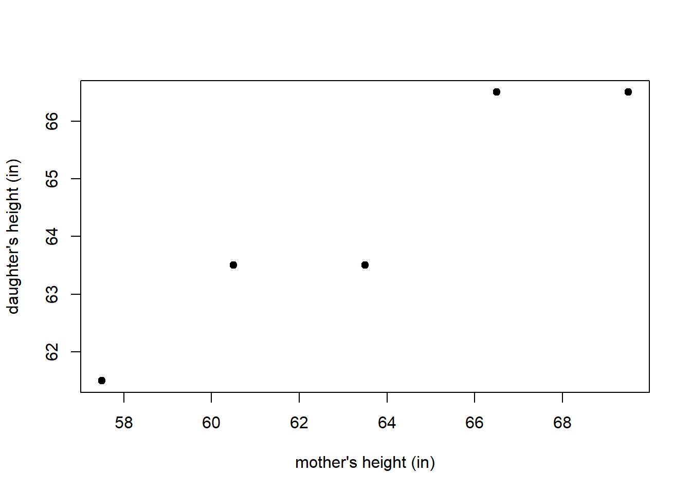
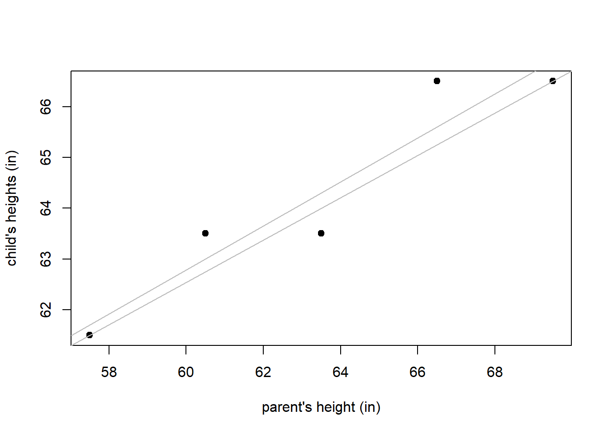
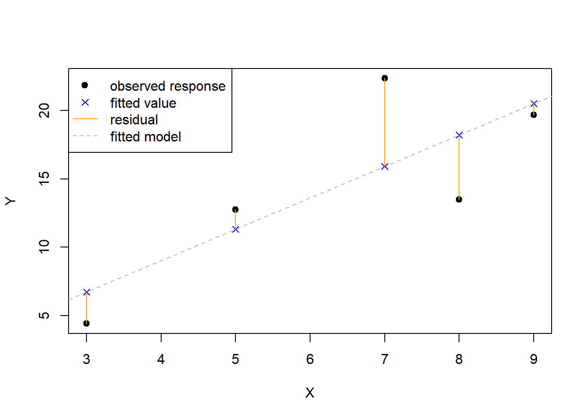
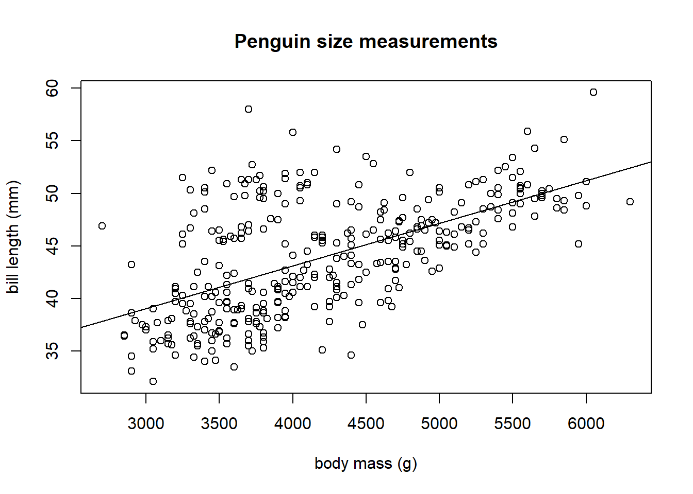

3 Parameter Estimation and Model Fitting
 This work is licensed under a Creative Commons Attribution-NonCommercial-ShareAlike 4.0 International License.
This work is licensed under a Creative Commons Attribution-NonCommercial-ShareAlike 4.0 International License.
A condensed, interactive version of this content is available as a Colab notebook, which can be accessed by clicking or scanning the QR code below.

3.1 What is regression?
Pearson and Lee (1897) and Pearson and Lee (1903) collected a classical data set that measures the heights of mothers and their adult daughters. Figure 3.1 displays a scatter plot of 5 randomly selected observations from that data set. Is it be reasonable to use a mother’s height to predict the height of her adult daughter?
A regression model is a model describing the typical relationship between a set of variables. A regression analysis is the process of building a regression model using a set of variables based on \(n\) observations of these variables sampled from a population. In the present context, we want to model the height of adult daughters using the height of their mothers.
3.1.1 Response versus predictor variables
The variables in a regression analysis may be divided into two types: the response variable and the predictor variables.
The response variable is the outcome variable want to predict. It is also known as the outcome, output, or dependent variable. The response variable is denoted by \(Y\). The observed value of \(Y\) for observation \(i\) is denoted by \(Y_i\).
Predictors variables are the variables available to model the response variable. Predictor variables are also known as explanatory, regressor, input, or independent variables, or simply as features. Following the convention of Weisberg (2014), we use the term regressor to refer to the variables used in our regression model, whether that is the original predictor variable, some transformation of a predictor, some combination of predictors, etc. Thus, every predictor can be a regressor but not all regressors are a predictor. The regressor variables are denoted by \(X_1, X_2, \ldots, X_{p-1}\). The value of \(X_j\) for observation \(i\) is denoted by \(x_{i,j}\). If there is only a single regressor in the model, we can denote the single regressor as \(X\) and the observed values of \(X\) as \(x_1, x_2, \ldots, x_n\). For the height data, the 5 pairs of observed data are denoted \[ (x_1, Y_1), (x_2, Y_2), \ldots, (x_5, Y_5), \] with \((x_i, Y_i)\) denoting the data for observation \(i\). In our height example shown in Figure 3.1, \(x_i\) denotes the mother’s height for observation \(i\) and \(Y_i\) denotes the daughter’s height for observation \(i\). Using the data provided in Table 3.1, we see that \(x_3 = 63.5\) and \(Y_5 = 66.5\).
| observation | mother | daughter |
|---|---|---|
| 1 | 57.5 | 61.5 |
| 2 | 60.5 | 63.5 |
| 3 | 63.5 | 63.5 |
| 4 | 66.5 | 66.5 |
| 5 | 69.5 | 66.5 |
3.1.2 Selecting the best model
Suppose we want to find the straight line that best fits the points in the plot of mother and daughter heights in Figure 3.1. How do we determine the “best fitting” model? Consider Figure 3.2, in which 2 potential “best fitting” lines are drawn on the scatter plot of the height data. Which one is best?

The rest of this chapter focuses on defining and estimating the parameters of a linear regression model. We will start with the simplest type of linear regression, called simple linear regression, which only uses a single regressor variable to model the response. We will then consider more complicated linear regression models. After that, we learn how to evaluate how well an estimated regression model fits the data. We conclude with a summary of some important concepts from the chapter.
3.2 Estimation of the simple linear regression model
Parameter estimation is the process of using observed data to estimate model parameters. There are many different methods of parameter estimation in statistics: method-of-moments, maximum likelihood, Bayesian, etc. The most common parameter estimation method for linear models is the least squares method, which is commonly called Ordinary Least Squares (OLS) estimation. OLS estimation estimates the regression coefficients with the values that minimize the residual sum of squares (RSS), which we will define shortly.
3.2.1 Defining a simple linear regression model
The regression model for \(Y\) as a function of \(X\), denoted \(E(Y \mid X)\), is the expected value of \(Y\) conditional on the value of regressor \(X\). Thus, a regression model specifically refers to the expected relationship between the response and regressors.
The simple linear regression model assumes the mean of the response variable \(Y\), conditional on a single regressor \(X\), is \[ E(Y\mid X) = \beta_0 + \beta_1 X. \tag{3.1}\]
The response variable \(Y\) is modeled as \[ \begin{aligned} Y &= E(Y \mid X) + \epsilon \\ &= \beta_0 + \beta_1 X + \epsilon, \end{aligned} \tag{3.2}\] where \(\epsilon\) is the model error.
The error term \(\epsilon\) is literally the deviation of the response variable from its mean. We typically assume that conditional on the regressor variable, the error term has mean 0 and variance \(\sigma^2\), which can be written as \[ E(\epsilon \mid X) = 0 \tag{3.3}\] and \[ \mathrm{var}(\epsilon \mid X) = \sigma^2. \tag{3.4}\] Using the response values \(Y_1, \ldots, Y_n\) and their associated regressor values \(x_1, \ldots, x_n\), the observed data are modeled as \[ \begin{aligned} Y_i &= \beta_0 + \beta_1 x_i + \epsilon_i \\ &= E(Y\mid X = x_i) + \epsilon_i, \end{aligned} \] for \(i=1, 2, \ldots, n\), where \(\epsilon_i\) denotes the error for observation \(i\).
3.2.2 Important terminology
The estimated regression model or fitted model is defined as \[ \hat{E}(Y|X) = \hat{\beta}_0 + \hat{\beta}_1 X, \] where \(\hat{\beta}_0\) and \(\hat{\beta}_1\) denote the estimated values of our regression parameters.
The \(i\)th fitted value is defined as \[ \hat{Y}_i = \hat{E}(Y|X = x_i) = \hat{\beta}_0 + \hat{\beta}_1 x_i. \tag{3.5}\] Thus, the \(i\)th fitted value is the estimated mean of \(Y\) when the regressor \(X=x_i\). More specifically, the \(i\)th fitted value is the estimated mean response based on the regressor value observed for the \(i\)th observation.
The \(i\)th residual is defined as \[ \hat{\epsilon}_i = Y_i - \hat{Y}_i. \tag{3.6}\] The \(i\)th residual is the difference between the response and estimated mean response of observation \(i\).
The residual sum of squares (RSS) of a regression model is the sum of its squared residuals, which we define as \[ RSS = \sum_{i=1}^n \hat{\epsilon}_i^2. \tag{3.7}\]
There are many equivalent expressions for the RSS. Notably, in the context of simple linear regression, to emphasize the dependence of the RSS on the estimated regression coefficients, \(\hat{\beta}_0\) and \(\hat{\beta}_1\), Equation 3.7 can be rewritten using Equation 3.5 and Equation 3.6 as \[ \begin{aligned} RSS(\hat{\beta}_0, \hat{\beta}_1) &= \sum_{i=1}^n \hat{\epsilon}_i^2 \\ &= \sum_{i=1}^n (Y_i - \hat{Y}_i)^2 & \\ &= \sum_{i=1}^n (Y_i - \hat{E}(Y|X=x_i))^2 \\ &= \sum_{i=1}^n (Y_i - (\hat{\beta}_0 + \hat{\beta}_1 x_i))^2. \end{aligned} \tag{3.8}\]
The fitted model is the estimated model that minimizes the RSS and is written as \[ \hat{Y}=\hat{E}(Y|X) = \hat{\beta}_0 + \hat{\beta}_1 X. \tag{3.9}\] Both \(\hat{Y}\) and \(\hat{E}(Y|X)\) are used to denote a fitted model. \(\hat{Y}\) is used for brevity, while \(\hat{E}(Y|X)\) is used for clarity. In a simple linear regression context, the fitted model is known as the line of best fit.
3.2.3 Visualizing terms
Figure 3.3 visualizes the response values, fitted values, residuals, and fitted model in a simple linear regression context.
- The fitted model is shown as the dashed grey line and minimizes the RSS.
- The observed values of the response variable, \(Y\), are shown as black dots.
- The fitted values, shown as blue x’s, are the values returned by evaluating the fitted model at the observed regressor values.
- The residuals, shown as solid orange lines, indicate the distance and direction between the observed responses and their corresponding fitted value. If the response is larger than the fitted value then the residual is positive, otherwise it is negative. The RSS is the sum of the squared vertical distances between the response and fitted values, i.e., the sum of the squared residuals.

3.2.4 OLS estimators of the simple linear regression parameters
The estimators of \(\beta_0\) and \(\beta_1\) that minimize the RSS for a simple linear regression model can be obtained analytically using basic calculus under minimal assumptions. Specifically, the optimal analytical solutions for \(\hat{\beta}_0\) and \(\hat{\beta}_1\) are valid as long as the regressor values are not a constant value, i.e, \(x_i \neq x_j\) for at least some \(i,j\in \{1,2,\ldots,n\}\).
Define \(\bar{x}=\frac{1}{n}\sum_{i=1}^n x_i\) and \(\bar{Y} = \frac{1}{n}\sum_{i=1}^n Y_i\). The expression \(\bar{x}\) is read “x bar”, and it is the sample mean of the observed \(x_i\) values. The OLS estimators of the simple linear regression coefficients that minimize the RSS are \[ \begin{aligned} \hat{\beta}_1 &= \frac{\sum_{i=1}^n x_i Y_i - \frac{1}{n} \biggl(\sum_{i=1}^n x_i\biggr)\biggl(\sum_{i=1}^n Y_i\biggr)}{\sum_{i=1}^n x_i^2 - \frac{1}{n} \biggl(\sum_{i=1}^n x_i\biggr)^2} \\ &= \frac{\sum_{i=1}^n (x_i - \bar{x})(Y_i - \bar{Y})}{\sum_{i=1}^n (x_i - \bar{x})^2} \\ &= \frac{\sum_{i=1}^n (x_i - \bar{x})Y_i}{\sum_{i=1}^n (x_i - \bar{x})x_i} \end{aligned} \tag{3.10}\] and \[ \hat{\beta}_0 = \bar{Y} - \hat{\beta}_1 \bar{x}. \tag{3.11}\] The various expressions given in Equation 3.10 are equivalent. In fact, in Equation 3.10, all of the numerators are equivalent, and all of the denominators are equivalent. We provide derivations of the estimators for \(\hat{\beta}_0\) and \(\hat{\beta}_1\) in Section 3.5.2.
In addition to the regression coefficients, the other parameter we mentioned in Section 3.2.1 is the error variance, \(\sigma^2\). The most common estimator of the error variance is \[ \hat{\sigma}^2 = \frac{RSS}{\mathrm{df}_{RSS}}. \tag{3.12}\] where \(\mathrm{df}_{RSS}\) is the degrees of freedom of the RSS. In a simple linear regression context, the denominator of Equation Equation 3.12) is \(n-2\). ?sec-degrees-of-freedom provides additional details about degrees of freedom.
3.3 Penguins simple linear regression example
We will use the penguins data set in the palmerpenguins package (Horst, Hill, and Gorman 2022) to illustrate a very basic simple linear regression analysis.
The penguins data set provides data related to various penguin species measured in the Palmer Archipelago (Antarctica), originally provided by Gorman, Williams, and Fraser (2014). The data set includes 344 observations of 8 variables. The variables are:
species: the penguin species (factor).island: the island on which the penguin was observed (factor).bill_length_mm: the penguin’s bill length in millimeters (numeric).bill_depth_mm: the penguin’s bill depth in millimeters (numeric).flipper_length_mm: the penguin’s flipper length in millimeters (integer).body_mass_g: the penguin’s body mass in grams (integer).sex: the penguin’s sex (factor).year: the study year the penguin was observed (integer).
We start by loading the data into memory.
data(penguins, package = "palmerpenguins")We use the head function to examine the first six rows of the data frame. We see that some observations have missing values.
head(penguins)# A tibble: 6 × 8
species island bill_length_mm bill_depth_mm flipper_length_mm body_mass_g
<fct> <fct> <dbl> <dbl> <int> <int>
1 Adelie Torgersen 39.1 18.7 181 3750
2 Adelie Torgersen 39.5 17.4 186 3800
3 Adelie Torgersen 40.3 18 195 3250
4 Adelie Torgersen NA NA NA NA
5 Adelie Torgersen 36.7 19.3 193 3450
6 Adelie Torgersen 39.3 20.6 190 3650
# ℹ 2 more variables: sex <fct>, year <int>We begin by creating a scatter plot of bill_length_mm versus body_mass_g (y-axis versus x-axis) in Figure 3.4.
plot(bill_length_mm ~ body_mass_g, data = penguins,
ylab = "bill length (mm)", xlab = "body mass (g)",
main = "Penguin size measurements")We see a clear positive association between body mass and bill length: as the body mass increases, the bill length tends to increase. The pattern is linear, i.e., roughly a straight line.
We will build a simple linear regression model that regresses bill_length_mm on body_mass_g. More specifically, we want to estimate the parameters of the regression model \(E(Y \mid X) = \beta_0 + \beta_1X\), with \(Y=\mathtt{bill\_length\_mm}\) and \(X=\mathtt{body\_mass\_g}\), i.e., we want to estimate the parameters of the model \[
E(\mathtt{bill\_length\_mm}\mid \mathtt{body\_mass\_g})=\beta_0+\beta_1\mathtt{body\_mass\_g}.
\]
The lm function uses OLS estimation to fit a linear model to data. The function has two main arguments:
formula: a Wilkinson and Rogers (1973) style formula describing the linear regression model. For complete details, run?stats::formulain the Console. Ifyis the response variable andxis an available numeric predictor, thenformula = y ~ xtellslmto fit the simple linear regression model \(E(Y|X)=\beta_0+\beta_1 X\).data: the data frame in which the model variables are stored. This can be omitted if the variables are already stored in memory.
We use the code below to fit a linear model regressing bill_length_mm on body_mass_g using the penguins data frame and assign the result the name lmod. lmod is an object of class lm.
lmod <- lm(bill_length_mm ~ body_mass_g, data = penguins) # fit model
class(lmod) # class of lmod[1] "lm"The summary function summarizes the results of a fitted model. When an lm object is supplied to the summary function, it returns:
Call: the function call used to fit the model.Residuals: A 5-number summary of \(\hat{\epsilon}_1, \ldots, \hat{\epsilon}_n\).Coefficients: A table that lists:- The regressors in the fitted model.
Estimate: the estimated coefficient of each regressor.Std. Error: the estimated standard error of the estimated coefficients.t value: the computed test statistic associated with testing \(H_0: \beta_j = 0\) versus \(H_a: \beta_j \neq 0\) for each regression coefficient in the model.Pr(>|t|): the associated p-value of each test.
- Various summary statistics:
Residual standard erroris the value of \(\hat{\sigma}\), the estimate of the error standard deviation. The degrees of freedom is \(\mathrm{df}_{RSS}\), the number of observations minus the number of estimated coefficients in the model.Multiple R-squaredis a measure of model fit discussed in Section @ref(evaluating-model-fit).Adjusted R-squaredis a modified version ofMultiple R-squared.F-statisticis the test statistic of the test that compares the model with an only an intercept to the fitted model. TheDF(degrees of freedom) values relate to the statistic under the null hypothesis, and thep-valueis the p-value of the test.
We use the summary function on lmod to produce the output below.
# summarize results stored in lmod
summary(lmod)
Call:
lm(formula = bill_length_mm ~ body_mass_g, data = penguins)
Residuals:
Min 1Q Median 3Q Max
-10.1251 -3.0434 -0.8089 2.0711 16.1109
Coefficients:
Estimate Std. Error t value Pr(>|t|)
(Intercept) 2.690e+01 1.269e+00 21.19 <2e-16 ***
body_mass_g 4.051e-03 2.967e-04 13.65 <2e-16 ***
---
Signif. codes: 0 '***' 0.001 '**' 0.01 '*' 0.05 '.' 0.1 ' ' 1
Residual standard error: 4.394 on 340 degrees of freedom
(2 observations deleted due to missingness)
Multiple R-squared: 0.3542, Adjusted R-squared: 0.3523
F-statistic: 186.4 on 1 and 340 DF, p-value: < 2.2e-16Using the output above, we see that the estimated parameters are \(\hat{\beta}_0=26.9\) and \(\hat{\beta}_1=0.004\). Thus, our fitted model is \[ \widehat{\mathtt{bill\_length\_mm}}=26.9+0.004 \mathtt{body\_mass\_g}. \]
In the context of a simple linear regression model, the intercept term is the expected response when the value of the regressor is zero, while the slope is the expected change in the response when the regressor increases by 1 unit. Thus, based on the model we fit to the penguins data, we can make the following interpretations:
- \(\hat{\beta}_1\): If a penguin has a body mass 1 gram larger than another penguin, we expect the larger penguin’s bill length to be 0.004 millimeters longer.
- \(\hat{\beta}_0\): A penguin with a body mass of 0 grams is expected to have a bill length of 26.9 millimeters.
The latter interpretation is nonsensical. It doesn’t make sense to discuss a penguin with a body mass of 0 grams unless we are talking about an embryo, in which case it doesn’t even make sense to discuss bill length. This is caused by the fact that we are extrapolating far outside the observed body mass values. Our data only includes information for adult penguins, so we should be cautious about drawing conclusions for penguins at other life stages.
The abline function can be used to automatically overlay the fitted model on the observed data. We run the code below to produce Figure 3.5. The fit of the model to our observed data seems reasonable.
plot(bill_length_mm ~ body_mass_g, data = penguins, main = "Penguin size measurements",
ylab = "bill length (mm)", xlab = "body mass (g)")
# draw fitted line on plot
abline(lmod)

R provides many additional methods (generic functions that do something specific when applied to a certain type of object) for lm objects. Commonly used ones include:
residuals: extracts the residuals, \(\hat{\epsilon}_1, \ldots, \hat{\epsilon}_n\) from anlmobject.fitted: extracts the fitted values, \(\hat{Y}_1, \ldots, \hat{Y}_n\) from anlmobject.predict: by default, computes \(\hat{Y}_1, \ldots, \hat{Y}_n\) for anlmobject. It can also be used to make arbitrary predictions for thelmobject.coeforcoefficients: extracts the estimated coefficients from anlmobject.deviance: extracts the RSS from anlmobject.df.residual: extracts \(\mathrm{df}_{RSS}\), the degrees of freedom for the RSS, from anlmobject.sigma: extracts \(\hat{\sigma}\) from anlmobject.
We now use some of the methods to extract important characteristics of our fitted model.
The coef function extracts the estimated regression coefficients, \(\hat{\beta}_0\) and \(\hat{\beta}_1\), from the fitted model.
(coeffs <- coef(lmod)) # extract, assign, and print coefficients (Intercept) body_mass_g
26.898872424 0.004051417 The residuals function extracts the vector of residuals, \(\hat{\epsilon}_1,\ldots, \hat{\epsilon}_n\) from the fitted model.
ehat <- residuals(lmod) # extract and assign residuals
head(ehat) # first few residuals 1 2 3 5 6 7
-2.9916846 -2.7942554 0.2340237 -4.1762596 -2.3865430 -2.6852575 The fitted function extracts the vector of fitted values, \(\hat{Y}_1,\ldots, \hat{Y}_n\), from the fitted model.
yhat <- fitted(lmod) # extract and assign fitted values
head(yhat) # first few fitted values 1 2 3 5 6 7
42.09168 42.29426 40.06598 40.87626 41.68654 41.58526 The predict function also extracts the vector of fitted values from the fitted model. It can be also used to predict the response of an observation for arbitrary values of the predictors.
yhat2 <- predict(lmod) # compute and assign fitted values
head(yhat2) # first few fitted values 1 2 3 5 6 7
42.09168 42.29426 40.06598 40.87626 41.68654 41.58526 The deviance function extracts the RSS of the fitted model.
(rss <- deviance(lmod)) # extract, assign, and print rss[1] 6564.494The df.residual function extracts the residual degrees of freedom from the fitted model.
(dfr <- df.residual(lmod)) # extract n - p[1] 340The sigma function extracts the estimated error standard deviation, \(\hat{\sigma}=\sqrt{\hat{\sigma}^2}\), from the fitted model. In the code below, we square \(\hat{\sigma}\) to estimate the error variance, \(\hat{\sigma}^2\).
(sigmasqhat <- sigma(lmod)^2) # estimated error variance[1] 19.30734From the output above, we that the the first 3 residuals are -2.99, -2.79, and 0.23. The first 3 fitted values are 42.09, 42.29, and 40.07. The RSS for the fitted model is 6564.49 with 340 degrees of freedom. The estimated error variance, \(\hat{\sigma}^2\), is 19.31.
We use the methods function to obtain a full list of methods available for lm objects using the code below.
methods(class = "lm") [1] add1 alias anova case.names coerce
[6] confint cooks.distance deviance dfbeta dfbetas
[11] drop1 dummy.coef effects extractAIC family
[16] formula hatvalues influence initialize kappa
[21] labels logLik model.frame model.matrix nobs
[26] plot predict print proj qr
[31] residuals rstandard rstudent show simulate
[36] slotsFromS3 summary variable.names vcov
see '?methods' for accessing help and source code3.4 Defining a linear model
3.4.1 Necessary components and notation
We now wish to discuss linear models in a broader context. We begin by defining notation for the components of a linear model and provide some of their important properties. We repeat some of the previous discussion for clarity.
- \(Y\) denotes the response variable.
- The response variable is treated as a random variable.
- We will observe realizations of this random variable for each observation in our data set.
- \(X\) denotes a single regressor variable. \(X_1, X_2, \ldots, X_{p-1}\) denote distinct regressor variables if we are performing regression with multiple regressor variables.
- The regressor variables are treated as non-random variables.
- The observed values of the regressor variables are treated as fixed, known values.
- \(\mathbb{X}=\{X_0, X_1,\ldots,X_{p-1}\}\) denotes the collection of all regressors under consideration, though this notation is really only needed in the context of multiple regression. \(X_0\) is usually the constant regressor 1, which is needed to include an intercept in the regression model.
- \(\beta_0\), \(\beta_1\), \(\ldots\), \(\beta_{p-1}\) denote regression coefficients.
- Regression coefficients are statistical parameters that we will estimate from our data.
- The regression coefficients are treated as fixed, non-random but unknown values.
- Regression coefficients are not observable.
- \(\epsilon\) denotes model error.
- The model error is more accurately described as random variation of each observation from the regression model.
- The error is treated as a random variable.
- The error is assumed to have mean 0 for all values of the regressors. We write this as \(E(\epsilon \mid \mathbb{X}) = 0\), which is read as, “The expected value of \(\epsilon\) conditional on knowing all the regressor values equals 0”. The notation “\(\mid \mathbb{X}\)” extends the notation used in Equation 3.1 to multiple regressors.
- The variance of the errors is assumed to be a constant value for all values of the regressors. We write this assumption as \(\mathrm{var}(\epsilon \mid \mathbb{X})=\sigma^2\).
- The error is not observable.
3.4.2 Standard definition of linear model
In general, a linear regression model can have an arbitrary number of regressors. A multiple linear regression model has two or more regressors.
A linear model for \(Y\) is defined by the equation \[ \begin{aligned} Y &= \beta_0 + \beta_1 X_1 + \beta_2 X_2 + \cdots + \beta_{p-1} X_{p-1} + \epsilon \\ &= E(Y \mid \mathbb{X}) + \epsilon. \end{aligned} \tag{3.13}\] We write the linear model in this way to emphasize the fact the response value equals the expected response for that combination of regressor values plus some error. It should be clear from Equation 3.13 that \[ E(Y \mid \mathbb{X}) = \beta_0 + \beta_1 X_1 + \beta_2 X_2 + \cdots + \beta_{p-1} X_{p-1}, \] which we prove in Chapter 5 under mild assumptions.
More generally, we can say that a regression model is linear if the mean function can be written as \[ E(Y \mid \mathbb{X}) = \sum_{j=0}^{p-1} c_j \beta_j, \tag{3.14}\] where \(c_0, c_1, \ldots, c_{p-1}\) are known functions of the regressor variables. For example, we could have \(c_1 = X_1 X_2 X_3\), \(c_3 = X_2^2\), \(c_8 = \ln(X_1)/X_2^2\), etc.
Alternatively, if \(g_0,\ldots,g_{p-1}\) are functions of \(\mathbb{X}\), then a linear regression model can be written as \[ E(Y\mid \mathbb{X}) = \sum_{j=0}^{p-1} g_j(\mathbb{X})\beta_j. \]
The key feature of the linear regression model is that the model is a linear combination of the regression coefficients.
3.4.3 Examples of linear models
A model is linear because of its form, not the shape it produces.
Some examples of linear regression models are:
- \(E(Y|X) = \beta_0\).
- \(E(Y|X) = \beta_0 + \beta_1 X + \beta_2 X^2\).
- \(E(Y|X_1, X_2) = \beta_0 + \beta_1 X_1 + \beta_2 X_2\).
- \(E(Y|X_1, X_2) = \beta_0 + \beta_1 X_1 + \beta_2 X_2 + \beta_3 X_1 X_2\).
- \(E(Y|X_1, X_2) = \beta_0 + \beta_1 \ln(X_1) + \beta_2 X_2^{-1}\).
- \(E(\ln(Y)|X_1, X_2) = \beta_0 + \beta_1 X_1 + \beta_2 X_2\).
- \(E(Y^{-1}|X_1, X_2) = \beta_0 + \beta_1 X_1 + \beta_2 X_2\).
Many of the linear model examples given above do not result in a straight line or surface but instead curve.
Some examples of non-linear regression models are:
- \(E(Y|X) = \beta_0 + e^{\beta_1 X}\).
- \(E(Y|X) = \beta_0 + \beta_1 X/(\beta_2 + X)\).
The latter regression models are non-linear models because there is no way to express them using the expression in Equation 3.14.
3.5 Estimation of the multiple linear regression model
Suppose we want to estimate the parameters of the model relating the response variable to multiple regressors via the equation \[ Y=\beta_0 + \beta_1 X_1 + \cdots + \beta_{p-1} X_{p-1} + \epsilon. \]
The system of equations relating the responses, the regressors, and the errors for all \(n\) observations can be written as \[ Y_i = \beta_0 + \beta_1 x_{i,1} + \beta_2 x_{i,2} + \cdots + \beta_{p-1} x_{i,p-1} + \epsilon_i,\quad i=1,2,\ldots,n. \tag{3.15}\]
3.5.1 Using matrix notation to represent a linear model
We can simplify the linear model described in Equation 3.15 using matrix notation. Appendix A provides an overview of matrix-related information that may be useful for understanding the discussion below.
We use the following notation:
- \(\mathbf{y} = [Y_1, Y_2, \ldots, Y_n]\) denotes the \(n\times 1\) column vector containing the \(n\) observed response values.
- \(\mathbf{X}\) denotes the \(n\times p\) matrix containing a column of 1s and the observed regressor values for \(X_1, X_2, \ldots, X_{p-1}\). This may be written as \[ \mathbf{X} = \begin{bmatrix} 1 & x_{1,1} & x_{1,2} & \cdots & x_{1,p-1} \\ 1 & x_{2,1} & x_{2,2} & \cdots & x_{2,p-1} \\ \vdots & \vdots & \vdots & \vdots & \vdots \\ 1 & x_{n,1} & x_{n,2} & \cdots & x_{n,p-1} \end{bmatrix}. \]
- \(\boldsymbol{\beta} = [\beta_0, \beta_1, \ldots, \beta_{p-1}]\) denotes the \(p\times 1\) column vector containing the \(p\) regression coefficients.
- \(\boldsymbol{\epsilon} = [\epsilon_1, \epsilon_2, \ldots, \epsilon_n]\) denotes the \(n\times 1\) column vector containing the \(n\) model errors.
The system of equations defining the model in Equation 3.15 can be written as \[ \mathbf{y} = \mathbf{X}\boldsymbol{\beta} + \boldsymbol{\epsilon}. \] A regression model that cannot be represented as a system of linear equations using matrices is not a linear model.
–>
–>
3.5.2 Derivation of the OLS estimators of the simple linear regression model coefficients
–>
–> –> –> –> –> –> –> –>
–> –> –> –> –> –> –> –>
–> –> –> –> –> –> –> –> –> –> –> –> –> –>